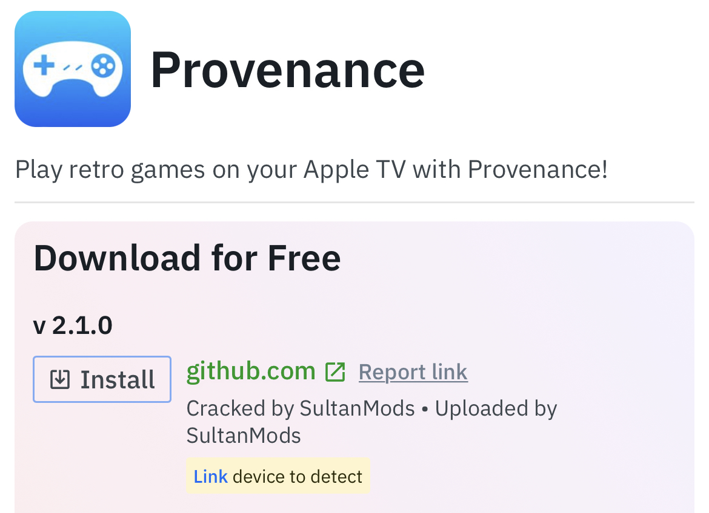

Sideloading on iOS
What is sideloading?
Sideloading is the process of installing programs onto a device through sources other than the ones given by the device manufacturer.
Apple requires all apps to be digitally signed, AKA, 'approved' before launching on your device.
Applications can be signed in two ways.
1. Use of personal Apple ID (Free)
2. Use of external App Signing services (Some free / Some paid)
The following guide will be covering the first method, using a free Apple ID to install apps with a Mac or PC.
This method has a limit of 3 apps per Apple ID, and apps must be resigned after 7 days.
To sideload apps without a PC or 7 day limits, consider using a signing service.
Sideloading applications with Apple ID
Things you'll need:
1. Free Apple account (can use a burner account)
2. PC or Mac computer
3. Sideloadly
To begin, you need to download the application that you want to install.
iOS applications are packaged as IPA files and can be found from many sources.
For this guide, we will be using appdb.to as an example.
Find the app you want to install on AppDB, and download the IPA file to your computer.
Sideloading applications with a signing service
A signing service is a website or application that provides various applications for the user to install.
Signing services work on all devices on all iOS versions.
Click here for a complete guide for sideloading applications via signing services.